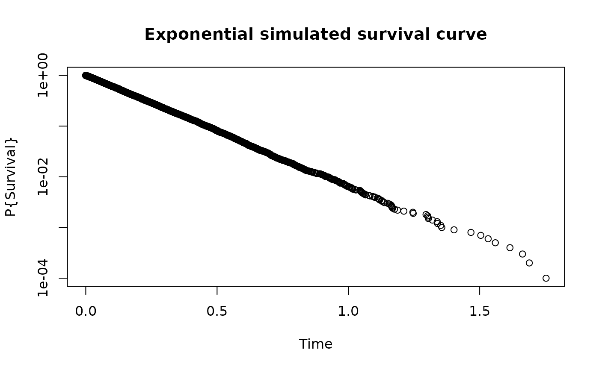
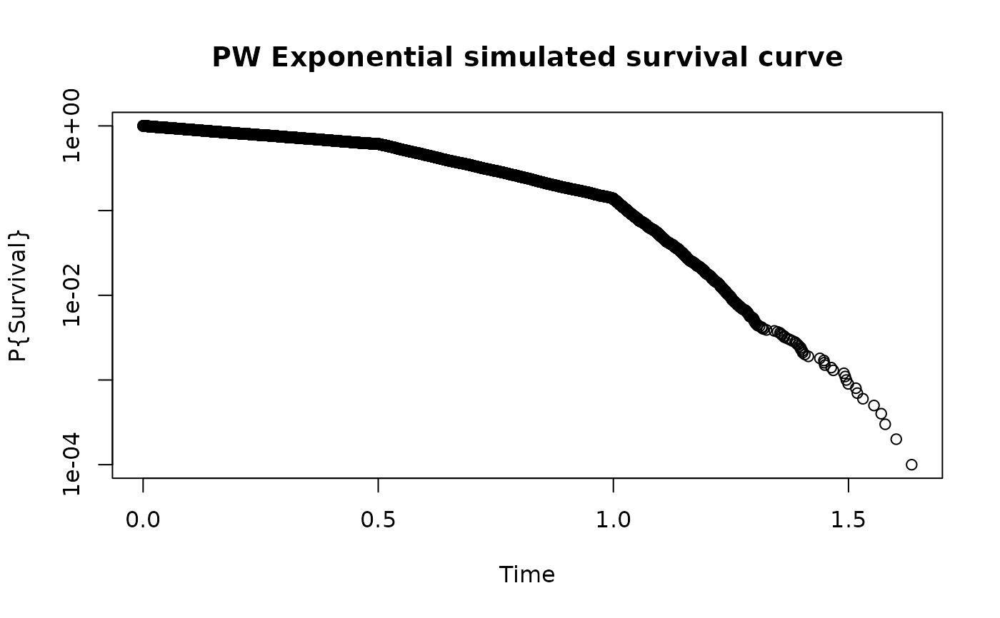

The piecewise exponential distribution allows a simple method to specify
a distribution where the hazard rate changes over time.
It is likely to be useful for conditions where failure rates change,
but also for simulations where there may be a delayed treatment effect
or a treatment effect that that is otherwise changing
(for example, decreasing) over time.
rpwexp() is to support simulation of both the Lachin and Foulkes (1986)
sample size method for (fixed trial duration) as well as the
Kim and Tsiatis (1990) method (fixed enrollment rates and either
fixed enrollment duration or fixed minimum follow-up);
see gsDesign::nSurv().
Usage
rpwexp(n = 100, fail_rate = data.frame(duration = c(1, 1), rate = c(10, 20)))Details
Using the cumulative = TRUE option, enrollment times that piecewise
constant over time can be generated.
Examples
# Example 1
# Exponential failure times
x <- rpwexp(
n = 10000,
fail_rate = data.frame(rate = 5, duration = 1)
)
plot(sort(x), (10000:1) / 10001,
log = "y", main = "Exponential simulated survival curve",
xlab = "Time", ylab = "P{Survival}"
)

# Example 2
# Get 10k piecewise exponential failure times.
# Failure rates are 1 for time 0 to 0.5, 3 for time 0.5 to 1, and 10 for > 1.
# Intervals specifies duration of each failure rate interval
# with the final interval running to infinity.
x <- rpwexp(
n = 1e4,
fail_rate = data.frame(rate = c(1, 3, 10), duration = c(.5, .5, 1))
)
plot(sort(x), (1e4:1) / 10001,
log = "y", main = "PW Exponential simulated survival curve",
xlab = "Time", ylab = "P{Survival}"
)
